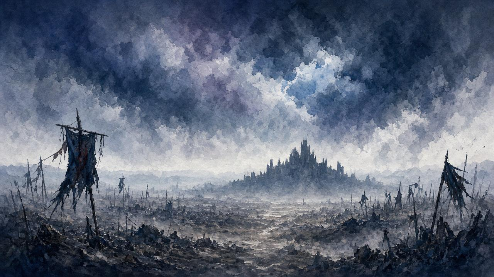

A · 點完香之後
- 喺 天守閣・九郎之間 開鬼佛傳送選單。
- 揀 葦名之底（Ashina Depths） → 乘轎石洞（Wedding Cave Door）。
日文／部分攻略叫「輿入れの岩戸」。唔係毒沼鬼佛、唔係隱村、唔係水車。

After Great Shinobi Owl · Kuro → Wedding Cave → Fountainhead Palace → Divine Dragon
大忍・貓頭鷹（葦名城天守閣屋頂）
乘轎石洞 祈禱 → 源之宮 → 神域・神龍
對齊定位，唔好喺屋頂發呆又唔好飛去平田。
落九郎房講到盡，再搞薰香——呢步唔齊，神轎冇「祈禱」。
| 項目 | 來源 | 備註 |
|---|---|---|
| 戰鬥記憶：大忍貓頭鷹 | 剛打倒 | 可去鬼佛提升攻擊力 |
| 常櫻香木 | 大忍貓頭鷹 | 斷龍胤四材之一 |
| 芳馨水蓮 | 獅猿（崩落谷・戲水處洞穴） | 見 補線 |
| 棲宿之石 | 蘆之村幻影破戒僧後・乘轎石洞 | 見 補線 |
| 不死斬 | 仙峰寺・屏風猿後・變若卿子 | 見 補線 |
若對話卡住、香爐撳唔到：通常係 四材未齊，先去 自檢／補線。
打完大忍貓頭鷹後，休息／偷聽九郎幾次，英麻有機會上樓梯口。跟住佢對話會開結局相關選項嘅前置——而家可以做，亦可以稍後先做；唔影響你入源之宮。本頁唔展開結局細節。

一條線跟住行：九郎點香 → 乘轎石洞 → 源之宮 → 神域。
入源之宮硬條件＝斷龍胤四材齊 + 對九郎忠誠（你已打大忍貓頭鷹＝已選忠誠）+ 點香 + 乘轎祈禱。
若未開乘轎石洞／冇棲宿之石，補呢條：
核對日期：2026-10-18（Asia/Hong_Kong）
路標唔清楚、想加邊段、有錯漏——丢句說話。留言經 Netlify Forms 直達網主（Credits 用完時可能暫收唔到，仍可留低）。
你嘅意見已送出俾網主。想再講可以繼續填。